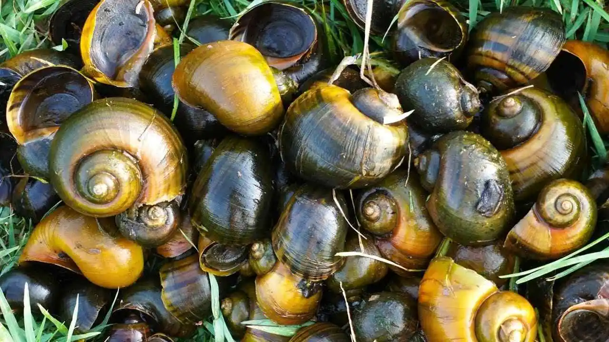
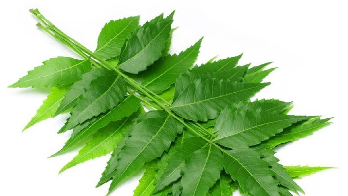
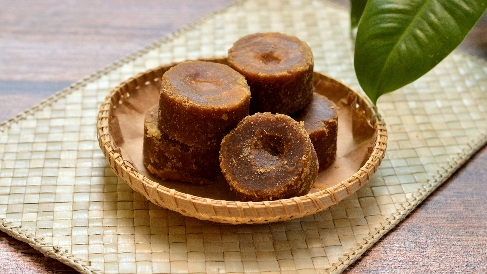
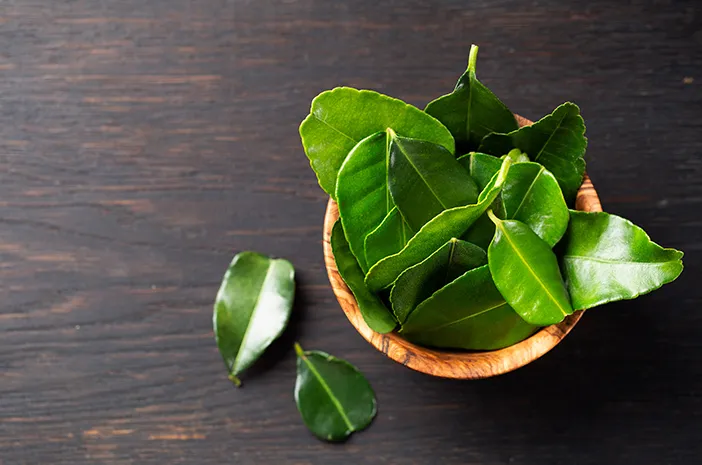
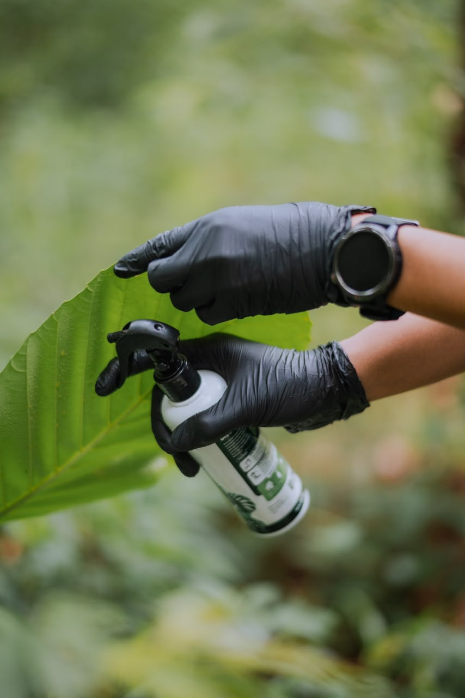
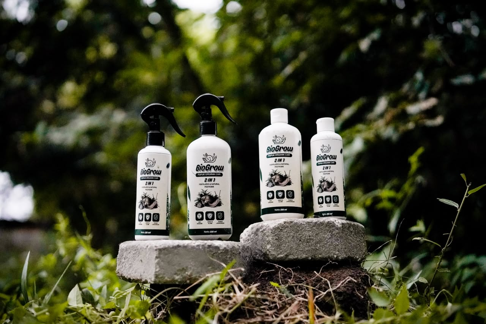

BioGrow merupakan pupuk organik cair (POC) 2-in-1 yang berfungsi sebagai pupuk dan pestisida nabati. Produk ini cocok digunakan untuk mendukung pertumbuhan tanaman sekaligus membantu mengendalikan hama secara alami.
Membantu meningkatkan pertumbuhan tanaman melalui penambahan nutrisi organik, memperkuat
akar, batang, dan daun, serta meningkatkan kesuburan tanah.
Selain itu, kandungan daun mimba berfungsi
sebagai pestisida nabati yang membantu mengendalikan hama dan penyakit tanaman secara alami.
Dengan memanfaatkan keong mas sebagai bahan
baku utama, BioGrow juga membantu mengurangi populasi hama sawah sekaligus mendukung
pertanian yang ramah lingkungan dan berkelanjutan.

Mengandung protein, nitrogen, fosfor, dan kalsium yang bermanfaat bagi tanaman. Setelah difermentasi, menjadi pupuk cair yang menyuburkan tanah dan mendukung pertumbuhan akar, batang, dan daun.

Mengandung senyawa alami yang sangat ampuh membantu mengendalikan hama dan menjaga kesehatan tanaman secara ramah lingkungan.

Berfungsi sebagai sumber energi esensial bagi mikroorganisme yang membantu mempercepat proses fermentasi pupuk organik cair.

Mengandung minyak atsiri dan senyawa antibakteri alami yang membantu menjaga kesehatan tanaman serta mengurangi gangguan hama tertentu.

BioGrow konsentrat digunakan dengan pengenceran 20 ml per 5 liter air (1:250), sedangkan varian spray siap pakai dapat langsung disemprotkan. Penggunaan dilakukan secukupnya hingga daun basah merata dan diulang setiap 7-10 hari sekali.
Waktu terbaik aplikasi BioGrow adalah pagi hari pukul 06.00–09.00 WIB atau sore hari pukul 15.00–17.00 WIB saat stomata daun terbuka sehingga penyerapan nutrisi berlangsung lebih optimal.
BioGrow diaplikasikan dengan metode spray atau penyemprotan langsung ke daun, terutama pada bagian bawah daun yang memiliki jumlah stomata lebih banyak. Penyemprotan dilakukan hingga daun terlihat basah merata tanpa menetes berlebihan.
BioGrow dapat digunakan pada berbagai jenis tanaman seperti padi, cabai, tomat, sawi, tanaman buah, tanaman hias, serta sistem hidroponik. Selain sebagai pupuk, BioGrow juga membantu mengendalikan hama seperti wereng, kutu, ulat, dan jamur patogen.
BioGrow cocok diaplikasikan pada sawah, lahan gambut, kebun hortikultura, lahan kritis, hidroponik, maupun urban farming. Produk ini sangat relevan digunakan di Provinsi Riau karena memanfaatkan bahan baku lokal berupa keong mas yang banyak ditemukan di area persawahan.
Kami percaya bahwa masa depan pertanian ada pada harmoni antara alam dan inovasi. BioGrow dikembangkan dengan penuh dedikasi untuk mendukung petani dalam menghasilkan panen yang berlimpah secara organik dan ramah lingkungan.
Bersama BioGrow, mari wujudkan ekosistem pertanian yang lebih sehat dan berkelanjutan untuk generasi mendatang.
Hitung pesanan Anda dan pesan langsung via WhatsApp instan.

BOT • Aktif Menerima Pertanyaan